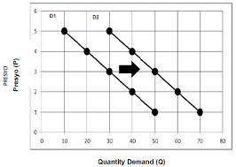
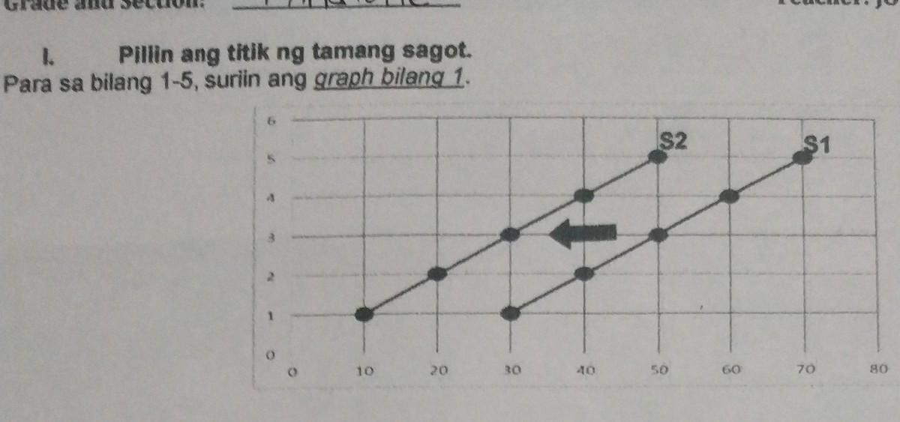

Demand- Tumutukoy sa dami ng produkto o serbisyo na gusto at kayang bilhin ng mga mamimili sa isang takdang presyo at partikular na panahon.
Presyo-Pinakamahalagang nagtatakda (determinant) sa dami ng demand.
BATAS NG DEMAND- Kapag tumataas ang presyo, bumababa ang dami ng gusto at kayang bilhin, at kapag bumababa ang presyo, tataas naman ang dami ng gusto at kayang bilhin (Ceteris Paribus)
MATHEMATICAL FORMULA- Demand=Kagustuhan+Kakayahan
DEMAND FUNCTION- Matematikong pagpapakita o paglalahad sa ugnayan ng presyo at quantity demanded sa pamamagitan ng formula (Qd)
-Qd=a-bP
-Qd: Dami ng demand
-a: Dami ng demand kung ang presyo ay 0
--b: Slope ng demand function
-P: Presyo
DEMAND SCHEDULE- Isang talahanayan na nagpapakita ng ugnayan sa pagitan ng presyo ng mga kalakal at ang halaga ng mga kalakal na nais bayarin ng mga mamimili sa kanila sa presyo na iyon.
DEMAND CURVE- Grapikong representasyon ng Batas ng Demand.